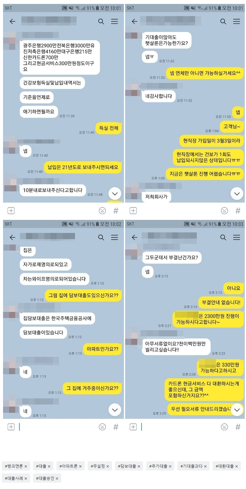

재직 1개월 미만 및 기대출 과다 직장인, 무설정 아파트론 2100만원 승인사례!
안녕하세요^^ 뱅크앤론 상담사 유미광 과장입니다^^ 오늘은 제가 진행해드린 이** 고객님의 대출 사례를 소개
해 드리겠습니다. 이** 고객님께서는 동일 직장에 5년째 근무중이셨지만, 회사분할 및 신규법인 신설로 인하여
소속되어있던 기존 회사에서 4대 보험이 상실되고, 신규 회사로 취득신고된지 1개월도 안된 월급 350만원을 수
령중이신 직장인이셨습니다. 사용중인 대출로는 광주은행 2900만원, 전북은행 3000만원, 유진저축은행 4160만
원, 대구은행 215만원, 카드론 700만원, 현금서비스 300만원외에 집 담보대출도 보유중이셨습니다. 동일 직장에
서 오래 근무중이셨지만, 금융사 가이드상 현직장 취득일이 1개월 미만이라면 전 직장 재직 기간이 인정되지않아
직장인 조건으로 추가대출 진행은 어려우셨습니다. 상담 후 저는 본인명의 아파트를 보유중이시고, 해당 아파트에
거주중이신 것을 확인하였습니다. 이에 무설정 아파트론으로 조회해드린 결과, 한 금융사에서 2300만원 13.6%로
진행가능하다는 안내를 받으셨습니다. 고객께서는 가승인 금액을 모두 진행하지 않으시고, 꼭 필요하셨던 2100만
원을 진행하셨고, 안전하게 입금 까지 받으셨습니다^^ 이에 이** 고객님께서도 매우 만족하셨습니다. 자세한 사항
은 아래 저와 이**고객님의 카톡대화 내용을 참고하실 수 있습니다. 감사합니다^^
